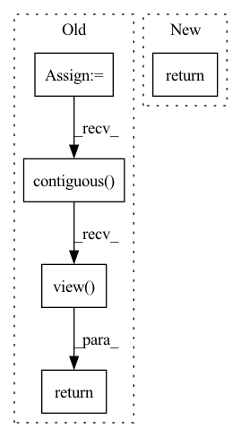

Pattern ID :1766

Before Change
h_reshape = h.contiguous().view(batch_size * time_step, self.hidden_dim)
if self.dropout > 0.0:
h_reshape = self.nn_dropout(h_reshape)
output = self.nn_output(h_reshape)
output = self.sigmoid(output)
output = output.contiguous().view(batch_size, time_step, self.output_dim)
return output, inputse_att
After Change
// output = output.contiguous().view(batch_size, time_step, self.output_dim)
// output = h_reshape.contiguous().view(batch_size, time_step, self.hidden_dim)
// return output, inputse_att
return output
In pattern: SUPERPATTERN
Frequency: 4
Non-data size: 5
Instances
Fragment ID: 6886937
Project Name: yhzhu99/covid-ehr-benchmarks
Commit Name: ce1f225e785f536b29b088cf35fc7aeae9ec9d0e
Time: 2022-06-25
Author: yhzhu99@gmail.com
File Name: app/models/backbones/adacare.py
M Class Name: AdaCare
N Class Name: AdaCare
M Method Name: forward(2)
N Method Name: forward(3)
M Parent Class: nn.Module
N Parent Class: nn.Module
M File Name: app/models/backbones/adacare.py
N File Name: app/models/backbones/adacare.py
M Start Line: 184
M End Line: 224
N Start Line: 185
N End Line: 223
'>
Before Change
B = x.data.size(0)
C = x.data.size(1)
H = x.data.size(2)
W = x.data.size(3)
return x.view(B, C, H, 1, W, 1).expand(B, C, H, tH // H, W, tW // W).contiguous().view(B, C, tH, tW)
else:
return F.interpolate(x, size=(tH, tW), mode="nearest")
After Change
//H = x.data.size(2)
//W = x.data.size(3)
return x.view(x.size(0), x.size(1), x.size(2), 1, x.size(3), 1).\
expand(x.size(0), x.size(1), x.size(2), target_size[2] // x.size(2), x.size(3), target_size[3] // x.size(3)).\
contiguous().view(x.size(0), x.size(1), target_size[2], target_size[3])
else:
'>
Fragment ID: 6886923
Project Name: tianxiaomo/pytorch-yolov4
Commit Name: 1ff5a1085ce0c1b35c2ea45b707166ac404e0b66
Time: 2020-08-11
Author: ersheng@nvidia.com
File Name: models.py
M Class Name: Upsample
N Class Name: Upsample
M Method Name: forward(4)
N Method Name: forward(4)
M Parent Class: nn.Module
N Parent Class: nn.Module
M File Name: models.py
N File Name: models.py
M Start Line: 23
M End Line: 36
N Start Line: 25
N End Line: 39
'>
Before Change
A = x[:, ::2, :, :]
B = x[:, 1::2, :, :]
A = A.view(N, 1, ord_num * H * W)
B = B.view(N, 1, ord_num * H * W)
concat_feats = torch.cat((A, B), dim=1).contiguous()
if self.training:
ord_prob = F.log_softmax(concat_feats, dim=1)
return ord_prob.view(-1, ord_num, H, W)
ord_prob = F.softmax(C, dim=1)[:, 1, ::]
ord_prob = ord_prob.view(-1, ord_num, H, W)
ord_label = torch.sum((ord_prob > 0.5), dim=1).view(-1, 1, H, W)
After Change
ord_prob = x.clone()
ord_prob[:, 0::2, :, :] = prob[:, 0, :, :, :]
ord_prob[:, 1::2, :, :] = prob[:, 1, :, :, :]
return ord_prob
ord_prob = F.softmax(concat_feats, dim=1)[:, 0, ::]
ord_label = torch.sum((ord_prob > 0.5), dim=1).reshape((N, 1, H, W))
'>
Fragment ID: 6886939
Project Name: dontlovebugs/superviseddepthprediction
Commit Name: 07fe1714fc568b25bd80debe8dd3ab800ff576a8
Time: 2020-05-02
Author: wangxin_buaa@163.com
File Name: dp/modules/decoders/OrdinalRegression.py
M Class Name: OrdinalRegressionLayer
N Class Name: OrdinalRegressionLayer
M Method Name: forward(2)
N Method Name: forward(2)
M Parent Class: nn.Module
N Parent Class: nn.Module
M File Name: dp/modules/decoders/OrdinalRegression.py
N File Name: dp/modules/decoders/OrdinalRegression.py
M Start Line: 26
M End Line: 41
N Start Line: 28
N End Line: 45
'>
Before Change
rnn_outputs = rnn_outputs.contiguous().view(-1, rnn_outputs.size(-1))
if self.dropout > 0.0:
rnn_outputs = self.nn_dropout(rnn_outputs)
output = self.nn_output(rnn_outputs)
output = output.contiguous().view(batch_size, time_step, self.output_dim)
output = torch.sigmoid(output)
// return output, torch.stack(distance)
return output
After Change
// output = torch.sigmoid(output)
// return output, torch.stack(distance)
return rnn_outputs
'>
Fragment ID: 6886942
Project Name: yhzhu99/covid-ehr-benchmarks
Commit Name: a9c2f882fd593647881eea41e246b60003a1bae9
Time: 2022-06-24
Author: yhzhu99@gmail.com
File Name: app/models/backbones/stagenet.py
M Class Name: StageNet
N Class Name: StageNet
M Method Name: forward(2)
N Method Name: forward(2)
M Parent Class: nn.Module
N Parent Class: nn.Module
M File Name: app/models/backbones/stagenet.py
N File Name: app/models/backbones/stagenet.py
M Start Line: 154
M End Line: 162
N Start Line: 154
N End Line: 163